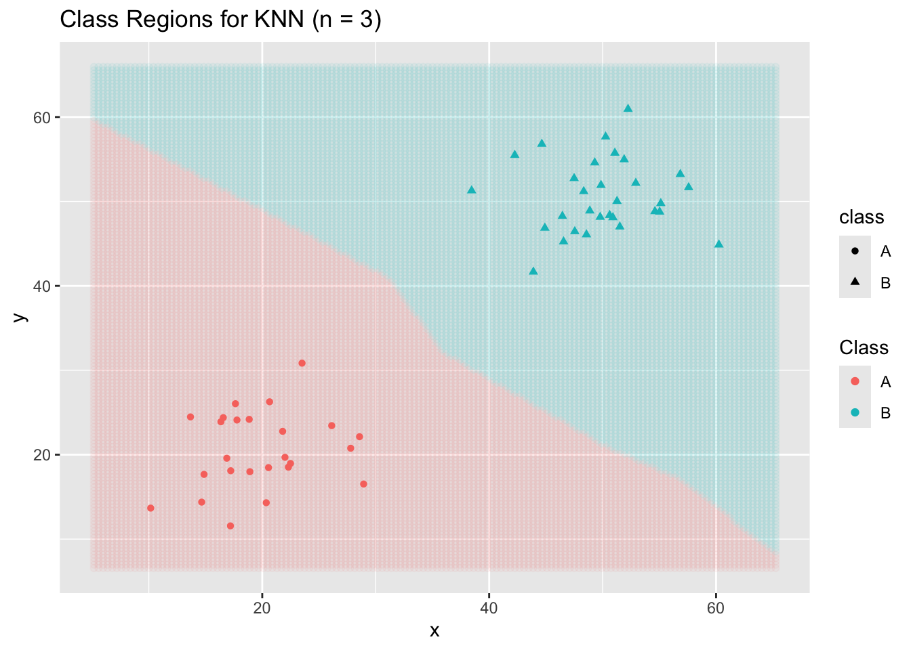
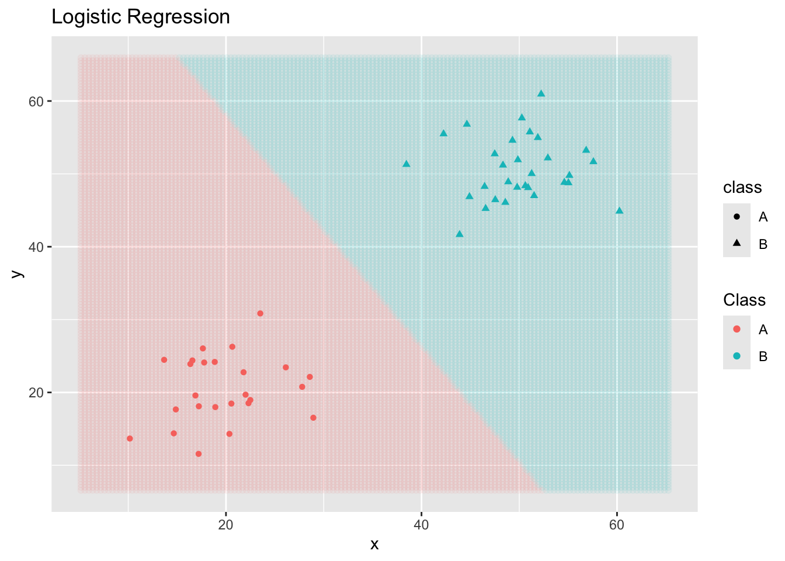
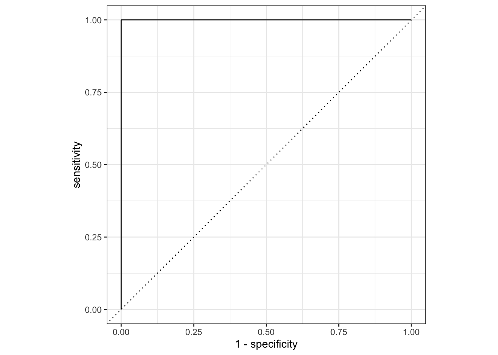

#Easy two-class
num_a <- 25
num_b <- 30
set.seed(123)
x_a <- rnorm(num_a, 20, 5)
y_a <- rnorm(num_a, 20, 5)
x_b <- rnorm(num_b, 50, 5)
y_b <- rnorm(num_b, 50, 5)
toy_data <- tibble(x = c(x_a, x_b), y = c(y_a, y_b), class = c(rep("A", num_a), rep("B", num_b)))
# #Second separable two-class with rare class
# num_points <- 1000
# x <- runif(num_points, 0, 50)
# y <- runif(num_points, 0, 50)
# class <- ifelse(sqrt((x - 20)^2 + (y - 40)^2) < 3,
# "A", "B")
# toy_data <- tibble(x = x, y = y, class = class)
# #Separable three-class
# num_a <- 10
# num_b <- 15
# num_c <- 12
#
# x_a <- rnorm(num_a, 20, 5)
# y_a <- rnorm(num_a, 20, 3)
# x_b <- rnorm(num_b, 40, 3)
# y_b <- rnorm(num_b, 40, 3)
# x_c <- rnorm(num_c, 60, 3)
# y_c <- rnorm(num_c, 20, 3)
#
# toy_data <- tibble(x = c(x_a, x_b, x_c), y = c(y_a, y_b, y_c), class = c(rep("A", num_a), rep("B", num_b), rep("C", num_c)))
# ##Two class rolled
# num_a <- 250
# num_b <- 175
#
# x_a <- runif(num_a, 0, 40)
# x_b <- runif(num_b, 25, 60)
# y_a <- -(x_a - 25)^2 + 475 + rnorm(num_a, mean = 0, sd = 50)
# y_b <- (x_b - 40)^2 + rnorm(num_b, mean = 0, sd = 50)
#
# toy_data <- tibble(x = c(x_a, x_b), y = c(y_a, y_b), class = c(rep("A", num_a), rep("B", num_b)))Regression Versus Classification
Objectives: In this notebook, our goals are to differentiate between regression and classification. In particular, we’ll recognize the following:
- Regression models are built to predict or explain a numerical response.
- Classification models are build to predict or explain a categorical response.
- Regression models seek to fit the training data as closely as possible – your mental image might be as a “line of best fit”.
- Classification models seek to separate classes – your mental image might be that classifiers seek to “draw fences”.
Toy Data for Classification
As we saw in MAT300, it is sometimes useful to have some “fake” data to play with in order to understand classification models. We’ll often call these “fake” datasets toy data. I’ve built several toy data sets below. I encourage you to play around by switching data sets and by making changes to the data sets I’ve provided.
toy_data %>%
ggplot() +
geom_point(aes(x = x, y = y, color = class))
Now that we have some toy data, we’ll build several classifiers.
dt_clf <- decision_tree() %>%
set_engine("rpart") %>%
set_mode("classification")
dt_rec <- recipe(class ~ x + y, data = toy_data)
dt_wf <- workflow() %>%
add_model(dt_clf) %>%
add_recipe(dt_rec)
dt_fit <- dt_wf %>%
fit(toy_data)
new_data <- crossing(x = seq(min(toy_data$x) - 5,
max(toy_data$x) + 5,
length.out = 150),
y = seq(min(toy_data$y) - 5,
max(toy_data$y) + 5,
length.out = 150))
new_data <- dt_fit %>%
augment(new_data)
ggplot() +
geom_point(data = new_data,
aes(x = x, y = y, color = .pred_class),
alpha = 0.05) +
geom_point(data = toy_data,
aes(x = x, y = y, color = class)) +
labs(title = "Class Regions for Decision Tree",
color = "Class")Now a KNN Classifier…
knn_clf <- nearest_neighbor(neighbors = 3) %>%
set_engine("kknn") %>%
set_mode("classification")
knn_rec <- recipe(class ~ x + y, data = toy_data)
knn_wf <- workflow() %>%
add_model(knn_clf) %>%
add_recipe(knn_rec)
knn_fit <- knn_wf %>%
fit(toy_data)
new_data <- crossing(x = seq(min(toy_data$x) -5,
max(toy_data$x) + 5,
length.out = 150),
y = seq(min(toy_data$y) - 5,
max(toy_data$y) + 5,
length.out = 150))
new_data <- knn_fit %>%
augment(new_data)
ggplot() +
geom_point(data = new_data,
aes(x = x, y = y, color = .pred_class),
alpha = 0.05) +
geom_point(data = toy_data,
aes(x = x, y = y, color = class)) +
labs(title = "Class Regions for KNN (n = 3)",
color = "Class")
And a logistic regression classifier… (Note: This one is not appropriate for cases with more than two classes.)
log_reg_clf <- logistic_reg() %>%
set_mode("classification")
log_reg_rec <- recipe(class ~ x + y, data = toy_data)
log_reg_wf <- workflow() %>%
add_model(log_reg_clf) %>%
add_recipe(log_reg_rec)
log_reg_fit <- log_reg_wf %>%
fit(toy_data)Warning: glm.fit: algorithm did not convergeWarning: glm.fit: fitted probabilities numerically 0 or 1 occurrednew_data <- crossing(x = seq(min(toy_data$x) -5,
max(toy_data$x) + 5,
length.out = 150),
y = seq(min(toy_data$y) - 5,
max(toy_data$y) + 5,
length.out = 150))
new_data <- log_reg_fit %>%
augment(new_data)
ggplot() +
geom_point(data = new_data,
aes(x = x, y = y, color = .pred_class),
alpha = 0.05) +
geom_point(data = toy_data,
aes(x = x, y = y, color = class)) +
labs(title = "Class Regions for KNN (n = 3)",
color = "Class")
Note that different classifiers make different assumptions about the data. Some classifiers make probablistic or distribution assumptions, while others are distance-based. In general, different classifiers will result in different boundary structures and can make quite different predictions on new observations. This means that we are searching for the most appropriate model class and level of flexibility as we approach classification problems.
Assessing Classifier Performance
There are several performance measures for classifiers. Perhaps the most obvious measure is accuracy – the proportion of observations correctly classified by our model. We’ll encounter others as well – accuracy is not always (or perhaps even often) the most appropriate performance measure for our classifiers.
Before getting into computing accuracy and our other performance metrics, it is worth talking about a confusion matrix. Confusion matrices summarize our data and predictions – the true classes of the observations are along the rows and the predicted classes are along the columns. For example, a confusion matrix for our decision tree classifier from earlier appears below.
dt_fit %>%
augment(toy_data) %>%
count(class, .pred_class) %>%
pivot_wider(id_cols = class,
names_from = .pred_class,
values_from = n) %>%
replace(is.na(.), 0)# A tibble: 2 × 3
class A B
<chr> <int> <int>
1 A 25 0
2 B 0 30Reading the Confusion Matrix
The confusion matrix is an array of numbers whose rows correspond to the true class that an observation belongs to. The columns of the confusion matrix correspond to the observation’s predicted class according to the model. This means that
- observations along the main diagonal of the confusion matrix are correctly predicted observations.
- observations away from the main diagonal correspond to incorrectly predicted observations – in particular, the number in row \(i\), column \(j\) is the number of observations which are truly class \(i\) but were predicted as class \(j\).
Understanding the confusion matrix can give us great insight as to where our model is becoming “confused” and how we might hope to improve it.
Computing Accuracy
The accuracy of a classification model is the rate at which it correctly classifies observations. To compute accuracy, we sum the entries of the confusion matrix along the main diagonal and then divide by the total number of observations we made predictions for. Mathematically, we have
\[\text{accuracy} = \frac{\sum{a_{ii}}}{n}\]
where \(a_{ii}\) is the \(i^{th}\) diagonal entry of the confusion matrix and \(n\) is the total number of observations that predictions were made on.
The {tidymodels} collection of packages, specifically {yardstick}, makes it easy for us to compute accuracy and nearly any other performance metric we would want to utilize!
dt_fit %>%
augment(toy_data) %>%
mutate(class = as.factor(class)) %>%
accuracy(class, .pred_class)# A tibble: 1 × 3
.metric .estimator .estimate
<chr> <chr> <dbl>
1 accuracy binary 1Why Not Accuracy?
To see why accuracy might not be the best measure of model performance, comment out the first data set in our initial code cell and uncomment the second toy data set – this is the one labeled second separable two-class with rare case. Run the code to generate the data and then rerun the code cells up to this point in order to construct the decision tree, KNN, and logistic regression classifiers.
Pay special attention to the plot of logistic regression classifier. We’ll print out the confusion matrix and the accuracy metric corresponding to that model here.
log_reg_fit %>%
augment(toy_data) %>%
count(class, .pred_class) %>%
pivot_wider(id_cols = class,
names_from = .pred_class,
values_from = n) %>%
replace(is.na(.), 0)# A tibble: 2 × 3
class A B
<chr> <int> <int>
1 A 25 0
2 B 0 30log_reg_fit %>%
augment(toy_data) %>%
mutate(class = as.factor(class)) %>%
accuracy(class, .pred_class)# A tibble: 1 × 3
.metric .estimator .estimate
<chr> <chr> <dbl>
1 accuracy binary 1What happened? That level of accuracy is pretty excellent, right? Unfortunately not if we care about that rare class more than the dominant class. This is often the case, especially in medical applications where the prevalence of a relatively rare disease is not widespread and most cases are truly negative. We are perhaps more interested in an ability to identify those rare cases than we are in simply obtaining an accurate model.
Especially in situations where we are dealing with rare classes, we need other performance metrics to capture what we truly care about.
Recall
Recall measures our model’s ability to detect the presence of a class of interest from the population. That is, given that an observation belongs to class X, what is the likelihood that the model predicted class X?
To compute the recall rate for Class X, we only look at the row of the confusion matrix corresponding to Class X. The denominator is the total number of observations belonging to that row. The numerator is the diagonal entry in that row (ie. the correctly classified observations).
Again, {tidymodels}, makes computing our performance metric quite easy.
log_reg_fit %>%
augment(toy_data) %>%
mutate(class = as.factor(class)) %>%
recall(class, .pred_class, event_level = "second")# A tibble: 1 × 3
.metric .estimator .estimate
<chr> <chr> <dbl>
1 recall binary 1Like accuracy, the higher the recall rate, the better the model’s ability to detect observations of the class of interest.
Precision
Precision measures our model’s ability to discriminate against a class of interest from the population. That is, given that the model predicted class X, what is the likelihood that the observation actually belongs to class X?
To compute the precision rate for Class X, we only look at the column of the confusion matrix corresponding to Class X. The denominator is the total number of observations belonging to that column. The numerator is the diagonal entry in that column (ie. the correctly classified observations).
Again, {tidymodels}, makes computing our performance metric quite easy.
log_reg_fit %>%
augment(toy_data) %>%
mutate(class = as.factor(class)) %>%
precision(class, .pred_class, event_level = "second")# A tibble: 1 × 3
.metric .estimator .estimate
<chr> <chr> <dbl>
1 precision binary 1Like accuracy and recall, the higher the precision rate, the better the model’s ability to detect observations not belonging to the class of interest.
ROC-AUC
When dealing with binary classification, the receiver-operator-curve’s area under the curve is a measure of the increases in true positive and false positive rates when varying a decision threshold. The idea is that we could use a variety of thresholds for assigning an observation to the class of interest.
The natural threshold is that if our model predicts a 50% chance or higher, then we should assign that observation to the class of interest and otherwise assign it to the other class. This isn’t the only possible choice, however. We could use a threshold of 20%, which would allow us to capture more of the cases actually belonging to the class of interest (true positives) but would also result in more mistakes (false positives). Similarly, we could use a threshold of 80% which would result in fewer false positives but also fewer true positives. One of the goals here is to find the optimal threshold.
For ROC-AUC, the close to 1, the better our model is doing at discriminating true positives from false positives. Values closer to 0.5 are like random guessing and indicate poor model performance. Values below 0.5 indicate that something has gone wrong because our model is doing worse than random guessing would do – in such cases it is likely that we have mixed up our classes somewhere.
log_reg_fit %>%
augment(toy_data) %>%
mutate(class = as.factor(class)) %>%
roc_curve(class, .pred_A) %>%
autoplot()Warning: Returning more (or less) than 1 row per `summarise()` group was deprecated in
dplyr 1.1.0.
ℹ Please use `reframe()` instead.
ℹ When switching from `summarise()` to `reframe()`, remember that `reframe()`
always returns an ungrouped data frame and adjust accordingly.
ℹ The deprecated feature was likely used in the yardstick package.
Please report the issue at <https://github.com/tidymodels/yardstick/issues>.
log_reg_fit %>%
augment(toy_data) %>%
mutate(class = as.factor(class)) %>%
roc_auc(class, .pred_A)# A tibble: 1 × 3
.metric .estimator .estimate
<chr> <chr> <dbl>
1 roc_auc binary 1Note that some {tidymodels} objects have an autoplot() method which will quickly construct a ggplot() displaying results in a reasonable manner. We can always construct a custom ggplot() on our own.
Other Assessment Metrics for Classifiers
While we’ll most often stick with accuracy, precision, recall, and roc_auc, it is worth knowing that there are other assessment metrics for classifiers. You can find several of them here on the {yardstick} vignette.
Summary
In this notebook we saw several examples of classification datasets, built three classifiers, and assessed them using different performance metrics. In particular, we saw classification accuracy, the rate of recall for a class of interest, the rate of precision for a class of interest, and the area under the roc-curve as performance metrics. We discussed how they are computed and showed how to calculate them easily with functionality from the {yardstick} package in {tidymodels}.
Being able to assess model performance is critical for our ability to move forward. These assessment metrics are how we will compare our models and how we will be able to determine whether our models are performing well/poorly and also improving or not.
At this point, we have all of the foundational material we need. We’ll move on to implementing specific classes of classification model and discussing what applications and use cases they are well-suited or poorly-suited to.